Tendências
Estilos: De olho nas tendências
Estas são as macro tendências verão 2020. Chamamos de macro tendência aquelas apostas que serão (ou já estão sendo) lançadas. Com o passar dos dias e a proximidade do verão outras tendências podem surgir.
Tendências primavera/verão 2020: modelagens e estampas para apostar
Mangas bufantes
As mangas estruturadas são um exemplo claro de modelagem feminina porém poderosa. Você vai encontrar no verão 2020 muitas mangas com detalhes, transparências e até mais volumosas e bufantes.
Quando o volume na manga está em uma peça mais clássica fica mais fácil de usar no dia a dia. Esse modelo de blusa é ótimo para mulheres que tem o quadril mais largo que o restante do corpo. Isso porque o volume nos ombros e braços equilibra com a proporção do quadril.
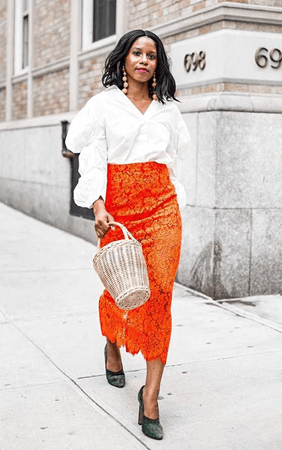As transparências leves e o poá
Seguem firmes na primavera/verão. Para as mulheres do estilo romântico esta é uma mistura que costuma agradar muito.
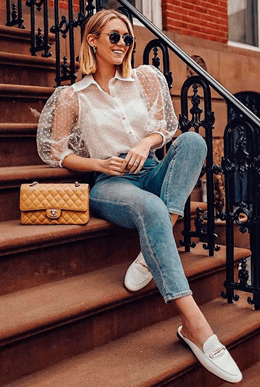Amarrações
Depois do último verão as amarrações e laços continuarão marcando presença no verão 2020. Blusas com nózinhos, calças com cadarços, e as famosas calças clochard continuam nos dias quentes. Essa ideia de peça confortável, soltinha, será muito bem-vinda no verão.
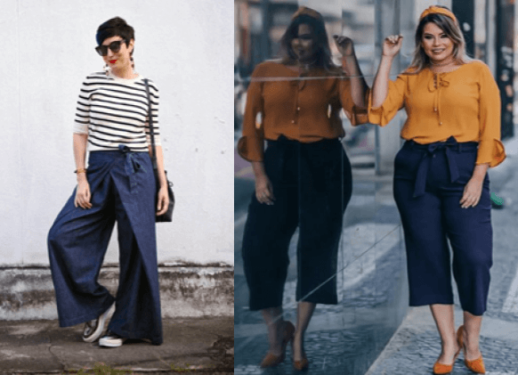Transpassado/envelope
Muito alinhado as amarrações o modelo envelope aparecerá na primavera/verão 2020. Isso porque este modelo é bem feminino, delinear o corpo e favorece a grande maioria das mulheres.
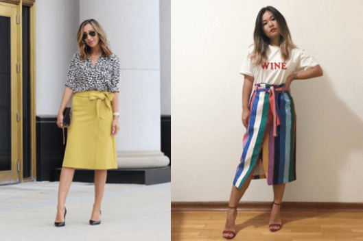A modelagem transpassada pode vir transpassada com amarração, transpassada com fenda e até só como um detalhe na costura, sem necessariamente a peça ser aberta.
Você encontra este modelo envelope (transpassado e com amarração) em saias, vestidos e até em camisas/blusas.
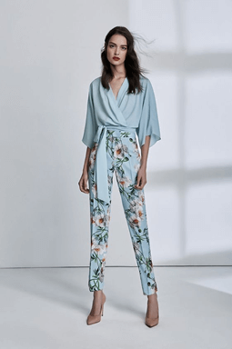Estampas: Tendências verão 2020
Tie dye
Dos anos 2000 o Tie dye voltou com tudo para as passarelas em 2020. Essa estampa manchada e com cara de feito em casa pode vir em biquinis e maiôs. Além de roupas e acessórios. As cores mais alegres e vivas ficam melhor nos jovens. Já as cores mais sóbrias podem também ser usadas no tie dye e deixam a peça com uma cara mais madura.
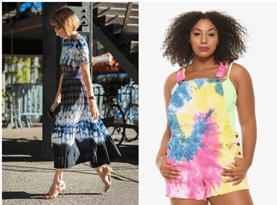 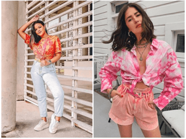Animal print
A estampa de oncinha, cobra e até aquela que parece girafa voltam no verão de 2020. Depois de marcarem presença no inverno nada melhor do que continuarem por mais alguns meses. A estampa de oncinha já se tornou uma estampa clássica no guarda-roupa feminino e muitas mulheres já usam sem medo. No verão ela pode continuar nos seus looks, a sugestão é sempre optar por tecidos mais leves e até com certa fluidez. Os vestidos no comprimento midi e com fenda são um luxo para os dias quentes, pode usar sem medo. O shortinho clochard da imagem acima carrega muitas informações de moda. A ideia de peça mais soltinha na corpo e confortável, a amarração e a estampa de animal print. Um sucesso nos looks de final de semana.
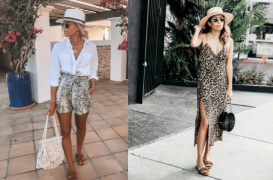O animal print pode vir também em outras cores, repare que na imagem ele vem no amarelo, cor que é tendência forte no verão 2020.
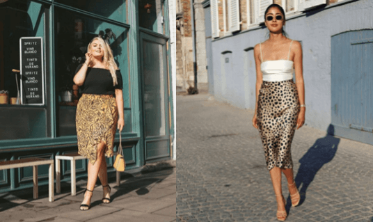A saia midi animal print em tecido acetinado também é uma aposta para a próxima estação. Ela pode ser combinada com blusa de alça fininha, modelo espaguete, que é uma tendência para os dias quentes.
Floral
O floral deste verão será o floral abstrato. Folhagens maiores, temas que se misturam e cores da estação em várias peças.
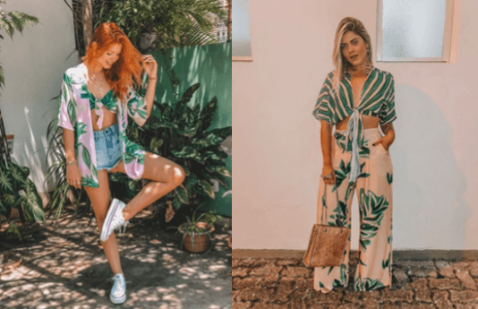Listras
As listras horizontais e verticais não saem de moda! Então se você tem listras no armário pode continuar usando sem medo neste verão. Algumas peças vem repaginadas, é provável que você encontre as listras arco-íris em algumas lojas. Como o nome sugere são listras com as cores do arco-íris, o visual fica bem alegre e bonito.
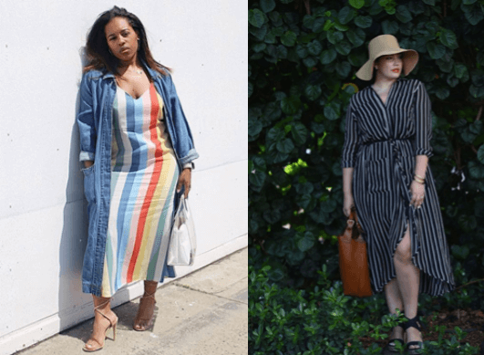Mas se você é fã dos tons mais tradicionais de listras aposte no fundo azul marinho com listras em branco, fica incrível. Você pode usar essa estampa no vestido chemise, uma modelagem que também vai estar como uma aposta do verão.
Tecidos que serão tendências
As fibras naturais são os mais indicados nos dias quentes. Isso porque um tecido composto de fibras naturais permite a troca de calor entre o corpo e o meio externo. Ajudando na nossa sensação térmica.
Então você pode investir em peças de algodão, linho, seda e viscose.
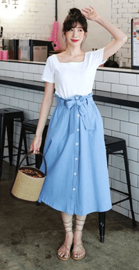Materiais como palha serão utilizados para fazer
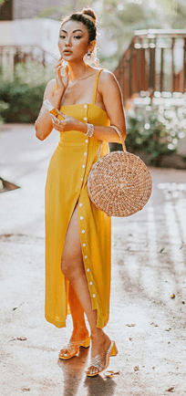Acessórios: bolsas, brincos e colares
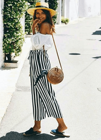Tendências de acessórios que estão bombando em 2020
Desde colares até presilhas e tiaras, saiba como combinar esses artigos e incrementar seu visual.
Não dá para negar que brincos, pulseiras, colares, presilhas e outros adereços são uma parte importantíssima de qualquer visual. Da cabeça aos pés, eles dão um charme a mais e deixam o seu look estiloso. E não há nada melhor do que usar aquilo que está na moda, no caso, os acessórios de 2020. Esse ano, esses artigos se tornaram elementos essenciais do home office. Embora muitas pessoas não estejam saindo de casa, isso não significa que elas não precisem se arrumar. Afinal, essa atitude, além de melhorar sua autoestima, também serve para se inspirar e, de quebra, tirar algumas fotinhos para atualizar o feed das suas redes sociais.
PRESILHAS
Além de ajudar a tirar o cabelo do rosto, as presilhas também podem incrementar o seu look. Esqueça o visual infantil que foi atribuído a elas durante muito tempo, pois agora esses artigos estão conquistando seu espaço no mundo da moda. Aposte em modelos com pérolas e strass para dar um brilho e ficar ainda mais elegante.
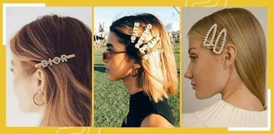CHUNKY CHAIN
Agora, se você for adepta ao street style, nada melhor do que combinar acessórios com uma Chunky Chain. Esse colar que lembra uma corrente está super em alta este ano e é perfeito para quem quer deixar o visual mais despojado. No entanto, se preferir um estilo mais delicado, aposte em modelos menos grossos e os combine com outros colares finos.
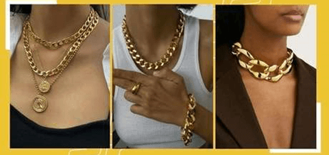TIARAS
Um dos acessórios que está roubando a cena em 2020 são as tiaras. Queridinho de personagens como a Lucrécia, da série Elite, ele é perfeito para aqueles dias que bate uma preguiça de fazer um penteado, mas, mesmo assim, a gente não quer deixar o cabelo muito simples. O melhor de tudo é que, agora, existem diversas opções, com brilho e cores para você escolher. Além dos modelos tradicionais, aposte em artigos finos e delicados se quiser um visual minimalista.
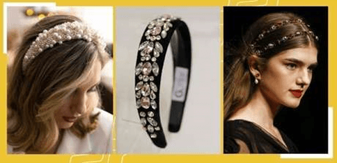ANÉIS CHUNKY
Não precisa deixar os anéis fininhos de lado, mas saiba que a moda agora são os modelos Chunky. Isso quer dizer que quanto maiores, mais estilosos eles são. E não dá pra negar que um anel faz toda a diferença. Além das opções douradas, que é a cor favorita de 2020, também dá pra optar pelos artigos em tons prateados.
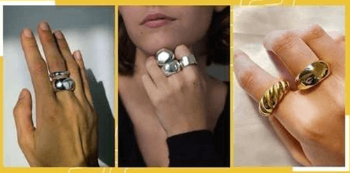PÉROLAS E MAIS PÉROLAS
Se tem uma coisa que nunca sai de moda são as pérolas, e em 2020 elas estão mais em alta ainda. Isso serve para todos os tipos de acessórios, indo além de apenas colares, pulseiras e anéis. Elas são delicadas e charmosas e combinam com todos os tipos de roupas e estilos. Não fique na dúvida, pode usar e abusar delas em qualquer look.
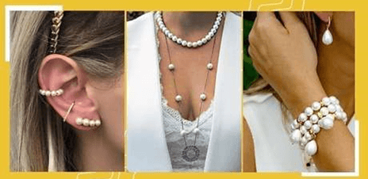MAXI BRINCOS
Quer ousar um pouco mais no seu visual? Aposte em maxi brincos, eles são perfeitos para dar uma cara nova para aquela roupa que você usa sempre. As versões com detalhes dourados ou coloridos tomaram as passarelas este ano e o melhor de tudo é que sozinhos eles já fazem 'a' diferença.
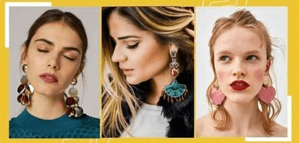MIÇANGAS
Uma das maiores tendências deste ano com certeza são as miçangas. Coloridas e com diversas formas, elas são capazes de deixar qualquer look mais divertido. Você pode fazer uma composição com outros colares e pulseiras, o importante é ser criativa. Os queridinhos das celebridades, no momento, são os modelos com letras do alfabeto, que formam palavras e até mesmo nomes.
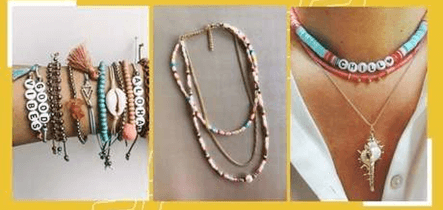 Voltar para a Página Principal